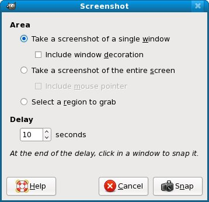

Distribute Your Activity
Choose A License
Before you give your Activity to anyone you need to choose a license that it will be distributed under. Buying software is like buying a book. There are certain rights you have with a book and others you don't have. If you buy a copy of The DaVinci Code you have the right to read it, to loan it out, to sell it to a used bookstore, or to burn it. You do not have the right to make copies of it or to make a movie out of it. Software is the same way, but often worse. Those long license agreements we routinely accept by clicking a button might not allow you to sell the software when you're done with it, or even give it away. If you sell your computer you may find that the software you bought is only good for that computer, and only while you are the owner of the computer. (You can get good deals on reconditioned computers with no operating system installed for that very reason).
If you are in the business of selling software you might have to hire a lawyer to draw up a license agreement, but if you're giving away software there are several standard licenses you can choose from for free. The most popular by far is called the General Public License, or GPL. Like the licenses Microsoft uses it allows the people who get your program to do some things with it but not others. What makes it interesting is not what it allows them to do (which is pretty much anything they like) but what it forbids them to do.
If someone distributes a program licensed under the GPL they are also required to make the source code of the program available to anyone who wants it. That person may do as he likes with the code, with one important restriction: if he distributes a program based on that code he must also license that code using the GPL. This makes it impossible for someone to take a GPL licensed work, improve it, and sell it to someone without giving him the source code to the new version.
While the GPL is not the only license available for Activities to be distributed on http://activities.sugarlabs.org all the licenses require that anyone getting the Activity also gets the complete source code for it. You've already taken care of that requirement by putting your source code in Gitorious. If you used any code from an existing Activity licensed with the GPL you must license your own code the same way. If you used a significant amount of code from this book (which is also GPL licensed) you may be required to use the GPL too.
Is licensing something you should worry about? Not really. The only reason you'd want to use a license other than the GPL is if you wanted to sell your Activity instead of give it away. Consider what you'd have to do to make that possible:
- You'd have to use some language other than Python so you could give someone the program without giving them the source code.
- You would have to have your own source code repository not available to the general public and make arrangements to have the data backed up regularly.
- You would have to have your own website to distribute the Activity. The website would have to be set up to accept payments somehow.
- You would have to advertise this website somehow or nobody would know your Activity existed.
- You would have to have a lawyer draw up a license for your Activity.
- You would have to come up with some mechanism to keep your customers from giving away copies of your Activity.
- You would have to create an Activity so astoundingly clever that nobody else could make something similar and give it away.
- You would have to deal with the fact that your "customers" would be children with no money or credit cards.
In summary, activities.sugarlabs.org is not the iPhone App Store. It is a place where programmers share and build upon each other's work and give the results to children for free. The GPL encourages that to happen, and I recommend that you choose that for your license.
Add License Comments To Your Python Code
At the top of each Python source file in your project (except setup.py, which is already commented) put comments like this:
# filename Program description # # Copyright (C) 2010 Your Name Here # # This program is free software; you can redistribute it and/or modify # it under the terms of the GNU General Public License as published by # the Free Software Foundation; either version 2 of the License, or # (at your option) any later version. # # This program is distributed in the hope that it will be useful, # but WITHOUT ANY WARRANTY; without even the implied warranty of # MERCHANTABILITY or FITNESS FOR A PARTICULAR PURPOSE. See the # GNU General Public License for more details. # # You should have received a copy of the GNU General Public License # along with this program; if not, write to the Free Software # Foundation, Inc., 51 Franklin St, Fifth Floor, Boston, MA 02110-1301 USA
If the code is based on someone else's code you should mention that as a courtesy.
Create An .xo File
Make certain that activity.info has the version number you want to give your Activity (currently it must be a positive integer) and run this command:
./setup.py dist_xo
This will create a dist directory if one does not exist and put a file named something like ReadETextsII-1.xo in it. The "1" indicates version 1 of the Activity.
If you did everything right this .xo file should be ready to distribute. You can copy it to a thumb drive and install it on an XO laptop or onto another thumb drive running Sugar on a Stick. You probably should do that before distributing it any further. I like to live with new versions of my Activities for a week or so before putting them on activities.sugarlabs.org.
Now would be a good time to add dist to your .gitignore file, then commit it and push it to Gitorious. You don't want to have copies of your .xo files in Git. Another good thing to do at this point would be to tag your Git repository with the version number so you can identify which code goes with which version.
git tag -m "Release 1" v1 HEAD git push --tags
Add Your Activity To ASLO
When you're ready to post the .xo file on ASLO you'll create an account as you did with the other websites. When you've logged in there you'll see a Tools link in the upper right corner of the page. Click on that and you'll see a popup menu with an option for Developer Hub, which you should click on. That will take you to the pages where you can add new Activities. The first thing it asks for when setting up a new Activity is what license you will use. After that you should have no problem getting your Activity set up.
You will need to create an Activity icon as a .gif file and create screen shots of your Activity in action. You can do both of these things with The GIMP (GNU Image Manipulation Program). For the icon all you need to do is open the .svg file with The GIMP and Save As a .gif file.
For the screen shots use sugar-emulator to display your Activity in action, then use the Screenshot option from the Create submenu of the File menu with these options:

This tells GIMP to wait 10 seconds, then take a screenshot of the window you click on with the mouse. You'll know that the 10 seconds are up because the mouse pointer will change shape to a plus (+) sign. You also tell it not to include the window decoration (which means the window title bar and border). Since windows in Sugar do not have decorations eliminating the decorations used by sugar-emulator will give you a screenshot that looks exactly like a Sugar Activity in action.
Every Activity needs one screenshot, but you can have more if you like. Screenshots help sell the Activity and instruct those who will use it on what the Activity can do. Unfortunately, ASLO cannot display pictures in a predictable sequence, so it is not suited to displaying steps to perform.
Another thing you'll need to provide is a home page for your Activity. The one for Read Etexts is here:
http://wiki.sugarlabs.org/go/Activities/Read_Etexts
Yes, one more website to get an account for. Once you do you can specify a link with /go/Activities/some_name and when you click on that link the Wiki will create a page for you. The software used for the Wiki is MediaWiki, the same as used for Wikipedia. Your page does not need to be as elaborate as mine is, but you definitely should provide a link to your source code in Gitorious.
Author : DistributeYourActivity
© James Simmons 2010
Modifications:
Lachlan Musicman 2010
License : General Public License
Produced in FLOSS Manuals (http://www.flossmanuals.net)